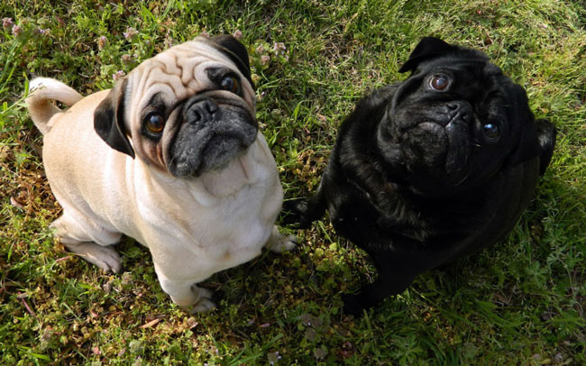
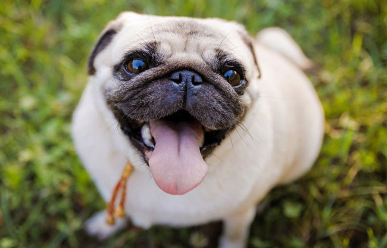
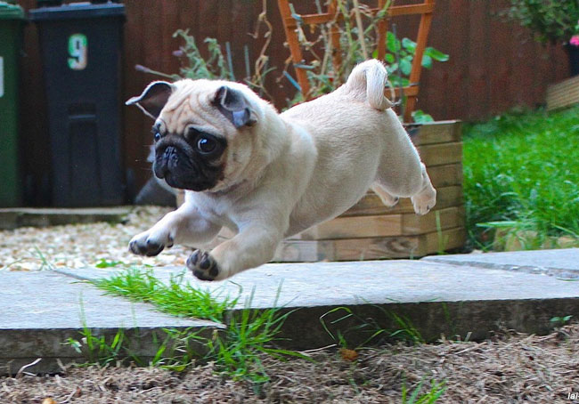
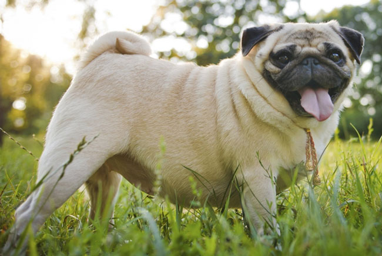

Порода собак Мопс: все про дивовижну тварину
Мопси – дивовижні собаки з незвичайним зовнішнім виглядом, які завжди викликають інтерес та усмішку. Це віддані, грайливі та надзвичайно милі домашні улюбленці.
Поведінка та навички мопсів
Звички свійських тварин відрізняються залежно від їхнього характеру та виховання. Мопси товариські, люблять увагу та обожнюють людей.
Власник з раннього віку повинен встановити чітку ієрархію, інакше мопс швидко зрозуміє, як маніпулювати людьми за допомогою свого милими очима.


Характер та зовнішній вигляд
Кремезні та кумедні мопси мають доброзичливий і м’який темперамент. Вони чудово ладнають з дітьми, полюбляють спілкування та практично не проявляють агресії.
Вага собак за місяцями
| Вік (міс) | Маса, кг |
|---|---|
| 1 | 0,65–1,15 |
| 2 | 1,5–2,25 |
| 3 | 2,15–3,4 |
| 4 | 3,45–4,7 |
| 5 | 3,65–5,9 |
| 6 | 4,15–7,1 |
| 10–12 | 6,5–9,0 |

Цікаві факти
- Мопсами захоплюються популярні люди — серед них Дар’я Донцова та Борис Мойсеєв.
- Попри коротку шерсть, мопси сильно линяють — їхні волоски легко піднімаються в повітря.
- Охоронці з мопсів слабкі: спершу гавкають, а потім одразу йдуть знайомитись.
- Дуже наполегливо випрошують ласощі.
- Надзвичайно цікаві — усе хочуть спробувати на зуб.
- Обожнюють подрімати в кріслі чи на дивані.